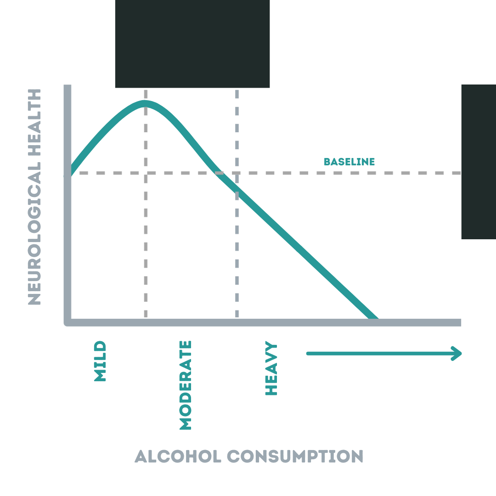

Alcohol & the adult brain: How much is too much?
When I was a teenager the received wisdom was that, for every alcoholic drink imbibed, 100 brain cells died. In 2016 when I started my PhD looking at the assessment and treatment of alcohol-related brain damage, I searched eagerly for the origin of this factoid and had no luck finding it.
Unsurprisingly, the relationship between alcohol consumption and brain damage is far more complex than the agreeably simple “1 drink = 100 brain cells killed” formula.
Here I provide a brief overview of the evidence in this area as a starting point for those interested in how alcohol use—from the occasional glass of wine to twenty or more drinks a week—affects our brain health.
Low to moderate alcohol consumption
In the last 12 years (from 2020), six large-scale systematic reviews and meta-analyses (Anstey, et al., 2009; Brennan et al., 2020; Neafsey & Collins, 2011; Panza et al., 2012; Peters et al., 2008; Rehm, et al., 2019) have combined the findings of studies investigating the association between alcohol consumption and adverse neurocognitive outcomes (e.g., neurodegenerative disorders like dementia) while accounting for other variables associated with drinking level (e.g., educational attainment). While each review used slightly different study inclusion criteria and key outcomes of interest, the overall message returned by all six is clear: the relationship between consumption and brain health appears to resemble an inverted J shape (see figure below.

To clarify, light to moderate alcohol consumption (≤2 standard drinks a day for men; ≤1 for women1) seems to have positive effects on brain health and heavier consumption (defined varyingly as either ≥3 or ≥4 drinks per day) has negative effects. More specifically, low-moderate drinkers have a significantly reduced risk of dementia and cognitive decline compared to non-drinkers, while heavy drinkers have an increased risk of these outcomes.
Is the inverted J shape a complete explanation?
No, unfortunately not. While the inverted J shape relationship is useful for describing alcohol’s effects at the collective level, the relationship between consumption and brain health is influenced by a whole range of factors other than just the amount consumed at the individual level.
Some factors thought to moderate the relationship:
The type of alcohol: drinking wine at low-moderate levels may have a more protective effect than beer or spirits (Neafsey & Collins, 2011), but this is very controversial.
Age: older adults are more vulnerable alcohol’s damaging effects and exhibit slower cognitive recovery rates (Bates et al., 2002).
Education: there’s a general sense in the literature that education protects against alcohol-related cognitive decline. Well-educated heavy drinkers score higher on cognitive screening tests than those with fewer years of education (Alarcon et al., 2015), but this could be due to a higher baseline cognitive ability rather than a lack of decline, as such.
Sex: women may be more likely to experience cognitive impairment at lower levels of consumption (Nolen-Hoeksema, 2004).
Genetic variants: individuals who possess the apolipoprotein E (APOE) ɛ4 allele (associated with an increased risk of Alzheimer’s dementia) don’t appear to experience the potential cognitive benefits associated with low-moderate alcohol consumption (Neafsey & Collins, 2011; Panza et al., 2012)2.
- Socio-economic status: low socioeconomic status is associated with increased alcohol harm (Johnco & Draper, 2015), including poorer cognitive outcomes than those with higher socioeconomic status who consume the same amounts of alcohol (Sabia et al., 2011) 3.
Some factors known to mediate the relationship
It also helps to know the ways through which alcohol damages the brain (the mediating factors):
- Nutritional deficiencies: perhaps the most important mediating factor. A deficiency in thiamine (vitamin B1) causes Wernicke-Korsakoff’s Syndrome (colloquially known as “alcoholic wet brain”), a severe, life-long disorder characterised by crippling amnesia. Alcohol impairs the body’s ability to absorb and utilise thiamine, which is required for several neurological processes4. Insufficient thiamine is perhaps the most worrying deficiency associated with alcohol misuse (being both common and severe in consequence), but deficiencies in several other vitamins and minerals (e.g., vitamins B2, B3, B6, & B9, zinc, magnesium) are common and each has their own set of negative neurological consequences5.
- Liver dysfunction: we all know that alcohol is bad news for the liver, but few know that a dysfunctional liver is bad news for the brain. When damaged by excessive alcohol use, the liver becomes unable to properly process neurotoxic compounds, allowing them to enter the bloodstream and eventually to migrate past the blood-brain barrier. Granted access to the brain, toxins like ammonia have pernicious effects on our neurophysiology and are linked to the disorder Hepatic Encephalopathy.
Are low levels really good for our brains?
Despite the findings of the reviews discussed earlier, restraint should be exercised before we declare that drinking low-moderate levels of alcohol has positive effects on brain function. In fact, authors in four of the reviews (Anstey et al., 2009; Panza et al., 2012; Peters et al., 2008; Rehm et al., 2019) suggest a cautious interpretation of their findings regarding low-moderate use as, even with their careful selection procedures, heterogeneity existed across the studies reviewed (e.g., inconsistencies in accounting for potential confounding variables & contradictory findings).
It’s also important to consider that the studies reviewed imply only an association between low-moderate alcohol consumption and cognitive health, and no causal link has been definitively established6.
What’s more, not all studies find positive associations between low levels of drinking and brain health. A recent investigation that accounted for multiple confounding variables (e.g., intelligence, socioeconomic status) found a dose-dependent relationship between low-moderate consumption and neuroimaging evidence of brain damage (Topiwala et al., 2017; see also: Hassing, 2018). A recent review also found increased levels of iron deposits in the brains of people who drink just seven or more units of alcohol a week (high levels of iron in the brain are linked to neurodegeneration, as well as Alzheimer’s and Parkinson’s disease; Topiwala et al., 2022).
While the functional implications of the observed brain changes in both studies are not fully known (i.e., we don’t know what they actually mean for our memory, attention etc.), the findings question the purported ‘neuroprotective’ effect of moderate alcohol consumption proposed by some (Neafsey & Collins, 2011).
Heavy alcohol consumption
In contrast to low-moderate alcohol consumption, little-to-no controversy surrounds the well-established relationship between heavy alcohol use and adverse neurocognitive outcomes. This was clearly evidenced in a large-scale analysis of over 31,000,000 adult hospital admissions in France between 2008 and 2013 which found Alcohol-Use Disorders (AUDs; i.e., the American Psychiatric Association’s term for alcohol dependence) were the strongest risk factor (of 34 [e.g., head injury; heart failure]) for all types of dementia, particularly early-onset dementia (Schwarzinger et al., 2018).
Multiple studies have observed impaired cognitive performance and reduced brain region volumes in those with AUDs compared with demographically matched (i.e., same age, gender etc.) healthy individuals (Fama et al., 2017; Moritz et al., 2018; Pitel et al., 2007; Pitel et al., 2008; Rolland et al., 2019). Most of these studies are poor at reporting the levels of alcohol use in their participants, though one reports an average daily consumption of 20 standard drinks per day (range = 7-48) for an average of 20 years (range = 5-35; Pitel et al., 2007).
There is evience that with abstinence, improvements are seen in cognition (Crowe et al., 2019; Stavro et al., 2013) and brain structure (Bartsch et al., 2007; Gazdzinski et al., 2010), implicating alcohol misuse as the cause of these impairments.
What about binge drinking?
Binge drinking (defined as consuming ≥6 drinks in one sitting) has received less attention in this context. The few existing studies have found binge drinkers (who are varyingly defined by their scores on questions relating to how frequently they binge drink/become drunk), when compared with non-binge drinkers, display poorer performance on tests of executive function (Salas-Gomez et al., 2016), working memory (Squeglia et al., 2011), and visuosptaial abilities (Townshend & Duka, 2005).
Preliminary evidence also indicates that starting to binge drink at a younger age is associated with poorer cognitive test scores later in life (Salas-Gomez et al., 2016), suggesting an accumulating effect on cognition.
Some caution is warranted, however, when considering this body of evidence: most studies so far have focused exclusively on adolescent/young adult populations and have used cross-sectional designs (cf. Mota et al, 2013) which make it difficult to infer cause and effect.
It may be premature to conclude that binge drinking causes poor cognitive performance—lower cognitive ability could increase the likelihood of someone binge drinking.
That said... a recent study with pre- and post-drinking data sheds some more light on this and answers a question I’ve always been interested in: What happens to our brains when we drink extremely heavily, say on our 21st birthday celebration? Well, this study looked at just that and, with the lead author’s permission, I’ve shared their helpful info-graphic describing the study below:
Final thoughts
So, what is a safe level of alcohol consumption for our brains? In reverse order:
The jury is still out on the exact consequences of long-term binge drinking, but it certainly doesn’t appear to be good for the brain and preliminary evidence urges caution.
Drinking at heavy levels (>2 drinks per day consistently) is definitely not safe. Don’t do it.
Drinking at low-moderate levels (1-2 drinks a day) is unlikely to be harmful for most people, and may (note the emphasis) even have beneficial effects on brain health7. But ultimately, none (zero, zilch, nada) is the only level we can say with absolute certainty is safe for our brain.
A boring, trite conclusion, I know, but it’s the truth. Sorry.
Please get in touch on Twitter or email (link in top menu) with any comments or questions regarding this post. This is a controversial topic and I welcome any feedback.
Last updated: 04/07/2023
References
Side note
In writing this post I learnt of a new, ridiculous term for heavy drinking: “crapulence” (adjective form: crapulent). I’m sure it will come in useful…
Disclaimer
I’m sure I don’t need to say this, but just in case: this post is not intended as medical advice.
Acknowledgements
I owe thanks to Gareth Roderique-Davies, Brittany Keen, Michelle Beckett, and Dylan Pickering for their helpful comments and suggestions for this post.
Cover photo credits:
Left: Photo by Jacek Dylag on Unsplash
Top right: Photo by Maksym Kaharlytskyi on Unsplash
Bottom right: Photo by Julia Nastogadka on Unsplash
Footnotes
A standard drink refers to 12oz (355 ml) of 5% beer/ale, 5oz (150 ml) of 12% wine, or 1.5oz (45 ml) of spirits such as whiskey or vodka. For more information click here.↩︎
It’s not all bad news for those with this genetic variant—a recent study of 337,484(!) participants supported the variant’s connection with Alzheimer’s, but also concluded that “ε4-associated disease protection was seen against obesity, chronic airway obstruction, type 2 diabetes, gallbladder disease, and liver disease”.↩︎
This effect extends beyond neurological harm to other physical and mental health consequences of alcohol consumption, and is referred to as the “alcohol harm paradox”. There’s no definitive explanation for why it occurs, but it could be due to differences in drinking patterns and other lifestyle behaviours (sleep, diet, exercise etc.) between the most and least disadvantaged (see here for a review of this topic).↩︎
After it’s internally converted to Thiamine pyrophosphate.↩︎
Some supporting citations for (mostly older) studies investigating nutritional deficiencies in those with alcohol use disorders: (Bogden & Troiano, 1978; Carrilho, Santos, Piasecki, & Jorge, 2013; Cook et al., 1991; Flink, 1986; Shane & Flink, 1991; Spiegel & Jim, 2011; Thomson, 2000; Thomson, Jeyasingham, Pratt, & Shaw, 1987).↩︎
Welch argued in 2017 that no single convincing neuroprotective mechanism underlying moderate alcohol consumption has been elucidated (Welch, 2017). Although, it has been hypothesised that the positive effects on cardiovascular health may be one way through which moderate consumption may reduce the risk of cognitive decline (Anstey et al., 2009). More recently, a study of mice found that low levels of alcohol consumption improved function of the glymphatic system, which is responsible for clearing waste products (including potentially toxic proteins that have been implicated in the aetiology of neurodegenerative disorders) from intercellular space in the central nervous system (Lundgaard et al., 2018). The authors found a clear inverted J relationship between consumption and glymphatic system function.↩︎
It’s important to note that this post focuses solely on brain health and ignores the effect that drinking alcohol has on other aspects of health. While low levels of alcohol use may be harmless for brain function, this may not be the case for say, liver function and cancer risk. Also, one clear exception to the “low levels are probably okay” conclusion is pregnancy. A recent study by University of Sydney Researchers found clear evidence that no level of alcohol use during pregnancy is safe.↩︎
Citation
@online{heirene2020,
author = {Heirene, Rob},
title = {Alcohol \& the Adult Brain: {How} Much Is Too Much?},
date = {2020-06-28},
url = {https://robheirene.netlify.app/posts/2020-alcohol-adult-brain/},
langid = {en}
}